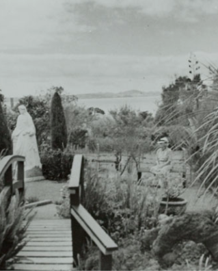

Tool for Slowing Down
Chloe Geoghegan & Chloe Reith
The (Old) New Spirit of Curating and Myths of Normadism
Tim Gentles
Pressing Singularities
Tendai John Mutambu & Robyn Maree Pickens
We're in This Together
Vera Mey
The Curatorial as a Liveable Subject Position: Hospitality and Difeerential Consciousness
Danny Butt
Community, Community Art, Community Art in Howick
Balamohan Shingade

Feeling Welcome?
Louisa Afoa & Ioana Gordon-Smith
On Friendship
Rebecca Boswell